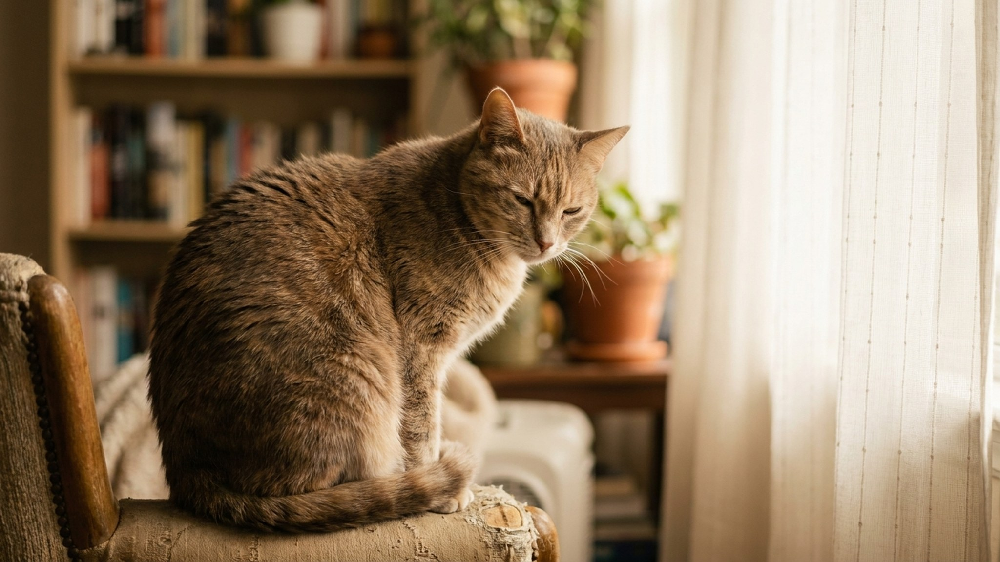

Признаки боли у кошки: 9 сигналов, которые легко не заметить

24 мая 2026 · 8 минут чтения · Здоровье · Кошки
Кошки эволюционировали как одиночные охотники в дикой природе, где показать слабость означало стать жертвой. Поэтому скрывать боль — это не характер и не вредность, это древний инстинкт выживания. Хозяину от этого не легче: кот страдает молча, пока состояние не становится критическим. Девять сигналов, которые помогут заметить боль раньше.
🐾 Экономьте на лишних визитах к врачу
Сначала спросите AI-ветеринара в AnimaLife — часто этого достаточно, чтобы понять, нужен ли визит к врачу.
Спросить бесплатно → Спросить в MAX →
Почему кошки скрывают боль — и что это значит для хозяина
В дикой природе больное животное становится мишенью. Кошки сотни тысяч лет эволюционировали в условиях, где демонстрация слабости опасна — даже домашние кошки сохраняют этот инстинкт полностью.
Исследования Cambridge Veterinary School показали: кошки маскируют боль до тех пор, пока её интенсивность не достигает 7-8 из 10 по болевой шкале. То есть к тому моменту, когда кот наконец «даёт знать», что ему плохо, ситуация уже серьёзная.
Для хозяина это означает: наблюдать не за криком и очевидным страданием (это редкость), а за тонкими изменениями в поведении и позах.
Признак 1: изменение позы и положения тела
Здоровая кошка спит, свернувшись клубком или вытянувшись — расслабленно. Кошка в боли принимает характерные позы:
- Горбится. Спина округлена, голова опущена, живот подобран — «поза хлеба» с напряжением, а не расслаблением.
- Лежит плашмя на животе с вытянутыми лапами и не расслабляется — так кошка минимизирует давление на болезненную область.
- Постоянно меняет позу — ищет положение, в котором меньше болит.
- Сидит с полузакрытыми глазами и не реагирует на звуки — состояние ступора при сильной боли.
Признак 2: изменение мимики — «кошачья гримаса боли»
Учёные Монреальского университета разработали Шкалу гримас кошки (Feline Grimace Scale, FGS) — научно валидизированный инструмент оценки боли по мимике. Параметры:
- Прищуренные глаза (не сонное прищуривание, а напряжённое, с морщинами у внешнего угла).
- Уши повёрнуты назад и в стороны (не вертикально, как у здоровой кошки).
- Усы опущены и прижаты к щекам (у здоровой кошки — горизонтально или веером).
- Морда напряжена, носогубные складки выраженные.
- Подбородок прижат к груди.
Чем больше параметров совпадает — тем выше вероятность боли. FGS обучают ветеринаров по всему миру; хозяин может использовать её как простой чек-лист при осмотре дома.
Признак 3: изменение грумминга
Кошка в норме тратит 30-50% времени бодрствования на уход за собой. Боль нарушает это двояко:
- Прекращает вылизываться — шерсть становится взъерошенной, тусклой, появляются колтуны. Типично при боли в конечностях, суставах, ротовой полости.
- Навязчиво вылизывает одно место — так кошки реагируют на локализованную боль (зуд, воспаление, рана под шерстью). Если на этом месте появляется залысина или язва — боль там.
Признак 4: изменение поведения у лотка
Боль при мочеиспускании или дефекации — один из самых частых сигналов. Проявления:
- Кошка долго сидит в лотке без результата (ФЛУТД, мочекаменная болезнь, запор).
- Кричит или мяукает во время туалета.
- Ходит рядом с лотком, но не в него — боится боли.
- Ходит в туалет в нетипичном месте — не из вредности, а потому что лоток ассоциируется с болью.
Особое внимание: кот сидит в лотке дольше 5 минут и не мочится — это потенциально опасное для жизни состояние (закупорка уретры). Ехать к врачу немедленно.
Признак 5: изменение аппетита
Кошка перестала есть — первый сигнал, который замечают хозяева. Но причин много; боль — одна из них. Специфические признаки боли при еде:
- Подходит к миске, нюхает и отходит — хочет есть, но больно (зубная боль, боль в челюсти, тошнота).
- Ест только с одной стороны рта.
- Роняет еду изо рта.
- Пьёт много — может быть симптомом почечной или зубной боли.
Признак 6: агрессия при прикосновении
Кошка, которая раньше любила ласку, начала шипеть или кусаться при прикосновении к определённому месту — это боль, а не изменение характера. Особенно значимо:
- Агрессия при прикосновении к животу (боль в органах ЖКТ, мочевой пузырь).
- Агрессия при поднятии или поглаживании спины (боль в позвоночнике, почках).
- Агрессия при прикосновении к лапе или боку (травма, артрит).
Правило: кошка укусила без провокации или при прикосновении к конкретному месту — это сигнал осмотра этого места и визита к врачу.
🐾 Всё о вашем питомце — в одном приложении
AI-ветеринар, дневник, напоминания о прививках и уходе. Установите AnimaLife — это бесплатно, в Telegram и MAX.
Открыть в Telegram → Открыть в MAX →
Признак 7: изменение активности и маршрутов
Кошки существа привычки. Если кот перестал запрыгивать на любимое место (диван, подоконник, кресло) — значит больно подниматься. Не «разленился» и не «разлюбил» — болит.
- Не запрыгивает туда, куда раньше запрыгивал легко.
- Спускается «ступеньками» вместо прыжка.
- Перестал ходить в дальние комнаты.
- Меньше двигается, больше лежит на одном месте.
- Не играет, хотя раньше активно реагировал на дразнилку.
Признак 8: изменение звуков
Большинство болевых кошек становятся тише. Но некоторые состояния дают обратную реакцию:
- Тихое, непрерывное мурчание в покое (не реакция на ласку) — иногда признак боли, кошки мурчат, чтобы успокоить себя.
- Громкое внезапное мяуканье без причины — острая боль (спазм, движение камня).
- Стоны или тихий писк при движении или вставании.
- Скрежет зубами (бруксизм) — редко, но значимо: зубная боль или тяжёлое состояние.
Признак 9: социальная самоизоляция
Кошка в боли прячется — под кровать, в шкаф, в самый тихий угол. Это инстинктивно: в природе больная кошка старается быть незаметной. Если кот, который обычно приходил к вам на диван, несколько дней сидит под кроватью и не выходит — это не «плохое настроение».
Дополнительные поведенческие признаки самоизоляции при боли:
- Не реагирует на имя или реагирует слабее.
- Не приходит к миске при звуке открываемой банки.
- Не выходит навстречу хозяину при возвращении домой.
Что делать при подозрении на боль
Не давать обезболивающие для людей. Парацетамол смертельно токсичен для кошек. Аспирин — токсичен. Ибупрофен — токсичен. Единственное, что можно дать кошке безопасно — ничего, пока не поговорили с ветеринаром.
Записать наблюдения и снять видео. В клинике кошка может вести себя иначе из-за стресса. Видео домашнего поведения — ценная информация для врача.
Оценить срочность:
- Немедленно к врачу: кот не мочится, дышит с трудом, лежит без движения, не реагирует на прикосновения, кричит от боли.
- В ближайшие 12-24 часа: отказ от еды больше суток, изоляция больше двух дней, явная хромота, кровь в моче или кале.
- На ближайший приём: изменение грумминга, снижение активности без острых симптомов, изменение характера прикусов.
← Все статьи · Открыть AnimaLife в Telegram · RSS